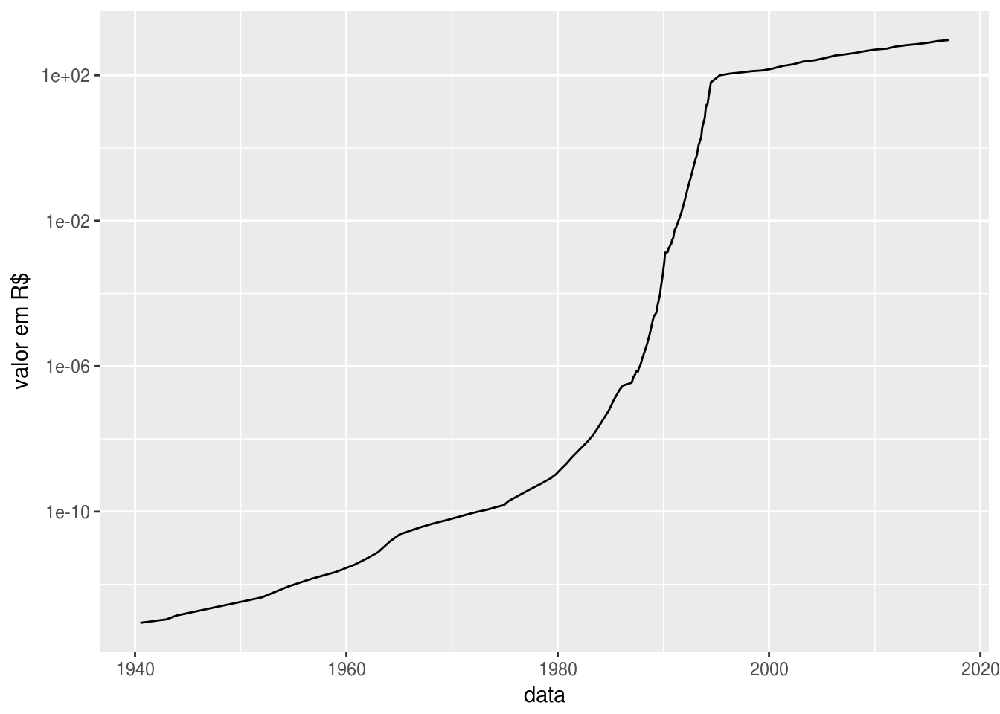
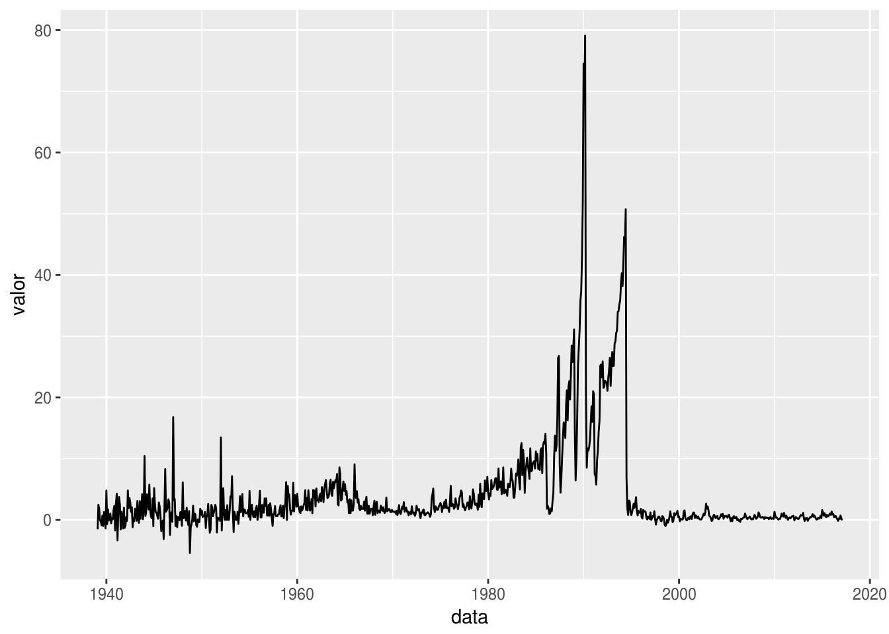
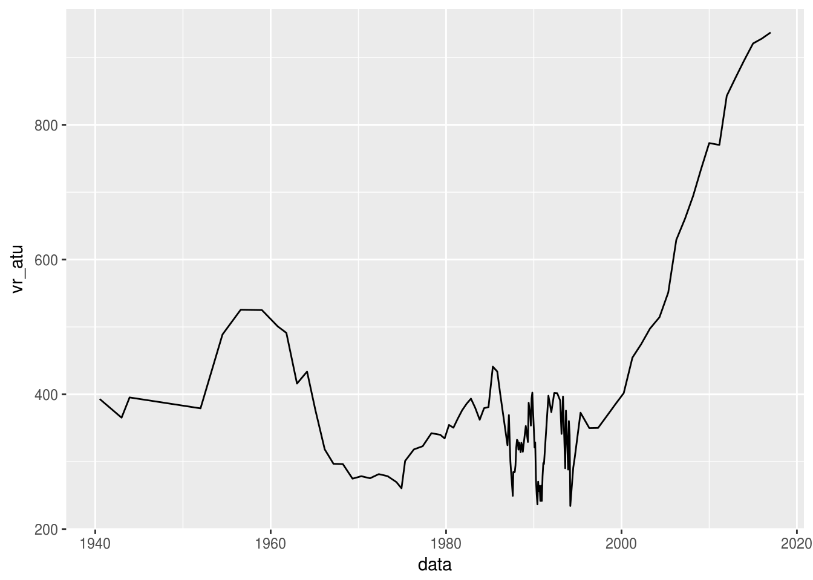
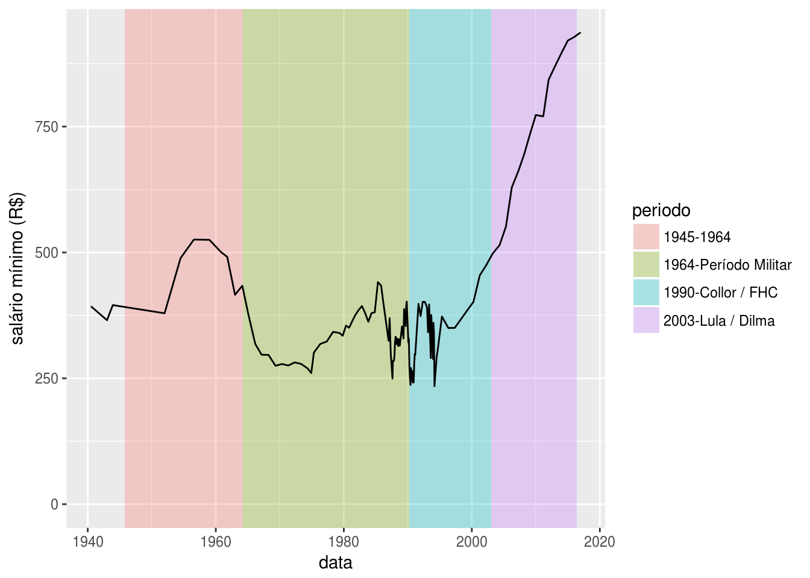
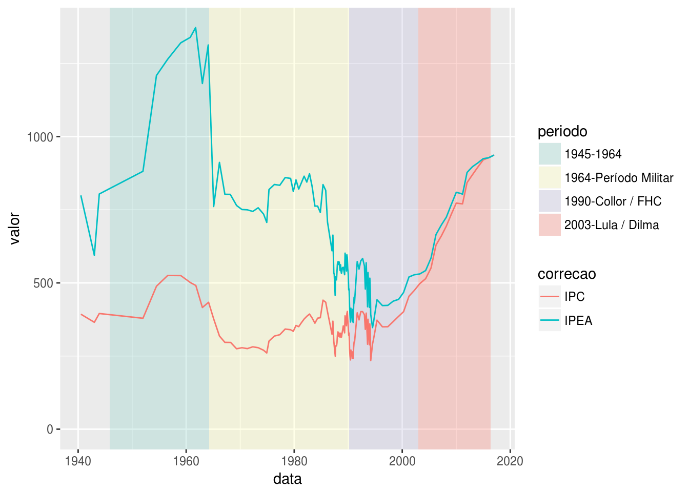

Me chamou a atenção um dia desses um artigo que mostrava a evolução do salário mínimo brasileiro real (descontada a inflação) ao longo do tempo - além de mostrar sob qual governo/período o país se encontrava. Achei interessante e logo comecei a imaginar como faria para elaborar um gráfico semelhante no R.
Bom, primeiramente precisaria de uma série dos valores históricos do salário mímino. Achei duas que pareciam promissoras: portal brasil e trt3. Deixando de lado a parte do scrapping, aqui está uma amostra da tabela - ver arquivo salario_minimo_br.csv:
library(readr)
library(dplyr)
salario_minimo <- read_csv("2017/salario_minimo_br.csv")
salario_minimo %>% sample_n(10) %>% arrange(data)| data | moeda | valor |
|---|---|---|
| 1970-05-01 | NCr | 187.20 |
| 1984-05-01 | Cr | 97176.00 |
| 1989-05-01 | NCz | 81.40 |
| 1990-08-01 | Cr | 5203.46 |
| 1990-09-01 | Cr | 6056.31 |
| 1991-01-01 | Cr | 12325.60 |
| 1992-09-01 | Cr | 522186.94 |
| 1994-09-01 | R | 70.00 |
| 2008-03-01 | R | 415.00 |
| 2010-01-01 | R | 510.00 |
Para conseguirmos comparar os diferentes valores de salários mínimos precisamos primeiramente ter uma base comum, e em diferentes épocas tivemos diferentes moedas - o que torna o trabalho mais interessante. Assim fui buscar os dados sobre as moedas na Wikipédia. Estão aí - ver arquivo moedas_br.csv:
moedas <- read_csv("2017/moedas_br.csv")
moedas| moeda | simbolo | dt_inicio_vigencia | divisor |
|---|---|---|---|
| Réis | R | NA | NA |
| Mil Réis | Rs | 1833-10-08 | 1000 |
| Cruzeiro (BRZ) | Cr$ | 1942-11-01 | 1 |
| Cruzeiro (BRZ) | Cr$ | 1964-12-01 | 1 |
| Cruzeiro Novo | NCr$ | 1967-02-13 | 1000 |
| Cruzeiro (BRB) | Cr$ | 1970-05-15 | 1 |
| Cruzeiro (BRB) | Cr$ | 1984-08-15 | 1 |
| Cruzado | Cz$ | 1986-02-28 | 1000 |
| Cruzado Novo | NCz$ | 1989-01-16 | 1000 |
| Cruzeiro (BRE) | Cr$ | 1990-03-16 | 1 |
| Cruzeiro Real | CR$ | 1993-08-01 | 1000 |
| Real | R$ | 1994-07-01 | 2750 |
Note-se que a coluna divisor mostra a relação entre duas moedas subsequentes (ex: para converter Cruzeiro Real em Real devemos dividir o valor por 2750). Assim vamos converter todos os valores históricos para Reais (R$):
library(lubridate)
library(ggplot2)
library(scales)
para_reais <- function(valor, data) {
y<-year(data)
if(y>1994) return(valor)
div <- 1
for(i in nrow(moedas):1) {
dt <- moedas[i, "dt_inicio_vigencia"][[1]]
if(data < dt) {
div <- div * moedas[i, "divisor"][[1]]
}
else {
break;
}
}
#message("data=", data, " valor=", valor, " div=", div, " valor/div=",valor/div)
return(valor/div)
}
sm <- salario_minimo
sm$vr <- NA
for(i in 1:nrow(sm)) {
sm[i, "vr"] <- para_reais(sm[i,"valor"][[1]], sm[i,"data"][[1]])
}
ggplot(sm, aes(data, vr)) + geom_line() + scale_y_log10() +
labs(y="valor em R$")
No gráfico acima podemos ver como se comportou o salário mínimo em termos absolutos (valores em R$ - escala logarítmica). Mas pouco se pode dizer do salário mínimo em termos reais - apenas que, se o poder de compra do salário mínimo teve pouca alteração, a inflação foi muito alta - em especial a partir da década de 1980 até o plano real (1994).
Salário Mínimo real
Com os valores nominais históricos do salário mínimo em uma mesma base monetária (R$), o próximo passo é atualizar os valores de acordo com um índice de preços para podermos comparar o valor de compra do salário mínimo ao longo do tempo. Séries de índices de preços podem ser encontradas nos sites do banco central, do IBGE e do IPEA.
Como o 1º valor de salário mínimo é de 1940, encontrei apenas o IPC da Fipe retroagindo até esta data (isso no sistema de séries temporais do banco central). Interessante notar que o IPC estima as variações do custo de vida das famílias com renda familiar entre 1 e 10 salários mínimos, então usar um indicador definido a partir do salário mínimo para estimar o valor real (atualizado) do salário mínimo é algo meio recursivo, mas enfim…
Após carregarmos o IPC a partir da API do banco central - série 193 - podemos ver, na figura abaixo, o comportamento do índice ao longo do tempo.
bcb_url <- paste0('http://api.bcb.gov.br/dados/serie/bcdata.sgs.',
193, '/dados?formato=csv')
download.file(bcb_url, "2017/bcb193.csv")ipc <- read_csv2("2017/bcb193.csv")
ipc$data <- dmy(ipc$data)
ipc$ano <- year(ipc$data)
ipc$mes <- month(ipc$data)
ggplot(ipc, aes(data, valor)) + geom_line()
De posse do índice de preços podemos agora atualizar os valores históricos (nominais) do salário mínimo para obtermos o salário mínimo real. Faremos isso usando como base a data da última atualização do valor (2017-01-01), ou seja, todos os outros valores serão corrigidos (atualizados) para esta data. Para tanto incluiremos a coluna fc (fatores de correção) no data.frame ipc (abaixo uma amostra - 10 linhas - da tabela).
ipc<-filter(ipc, data<=ymd("2017-01-01"))
ipc_fcs <- function() {
fc <- numeric(nrow(ipc))
length(fc)
fcsum <- 1
for(i in length(fc):1) {
fc[i] <- fcsum
fcsum <- fcsum * (1 + ipc[i, "valor"][[1]]/100)
}
return(fc)
}
ipc$fc <- ipc_fcs()
sm$fc <- numeric(nrow(sm))
sm$fc_rows <- numeric(nrow(sm))
sm$vr_atu <- numeric(nrow(sm))
sm$ipc_dt <- numeric(nrow(sm))
for(i in 1:nrow(sm)) {
dt <- sm[i, "data"][[1]]
m <- month(dt)
y <- year(dt)
ipcrow <- filter(ipc, ano==y, mes==m)
sm[i, "fc"] <- ipcrow$fc[[1]]
sm[i, "fc_rows"] <- nrow(ipcrow)
sm[i, "vr_atu"] <- sm[i, "vr"] * ipcrow$fc[[1]]
sm[i, "ipc_dt"] <- as.Date(ipcrow$data[[1]])
}
select(sm, data, moeda, valor, vr, fc, vr_atu) %>% sample_n(10) %>% arrange(data)| data | moeda | valor | vr | fc | vr_atu |
|---|---|---|---|---|---|
| 1968-03-26 | NCr | 129.60 | 0.000e+00 | 6.291096e+12 | 296.4822 |
| 1981-11-01 | Cr | 11928.00 | 0.000e+00 | 8.679423e+10 | 376.4660 |
| 1988-07-01 | Cz | 12444.00 | 4.500e-06 | 6.942160e+07 | 314.1391 |
| 1988-08-01 | Cz | 15552.00 | 5.700e-06 | 5.801086e+07 | 328.0673 |
| 1988-09-01 | Cz | 18960.00 | 6.900e-06 | 4.693436e+07 | 323.5911 |
| 1989-08-01 | NCz | 192.88 | 7.010e-05 | 5.295514e+06 | 371.4177 |
| 1993-03-01 | Cr | 1709400.00 | 6.216e-01 | 5.490800e+02 | 341.3082 |
| 2006-04-01 | R | 350.00 | 3.500e+02 | 1.797715e+00 | 629.2002 |
| 2008-03-01 | R | 415.00 | 4.150e+02 | 1.673013e+00 | 694.3002 |
| 2010-01-01 | R | 510.00 | 5.100e+02 | 1.515517e+00 | 772.9135 |
E assim podemos ver como se comportou o salário mínimo ao longo do tempo:
ggplot(sm, aes(data, vr_atu)) + geom_line()
Para deixar o gráfico mais interessante podemos incluir a informação do período político pelo qual o país passava:
periodos <- data_frame(
id=c(1945,1964,1990,2003),
periodo=c("1945-1964", "1964-Período Militar", "1990-Collor / FHC", "2003-Lula / Dilma"),
dt_ini=ymd(c("1945-10-29", "1964-04-01", "1990-03-15", "2003-01-01")),
dt_fim=ymd(c("1964-04-01", "1990-03-15", "2003-01-01", "2016-05-12"))
)
ggplot() +
geom_rect(data=periodos,
aes(xmin=dt_ini, xmax=dt_fim, ymin=-Inf, ymax=Inf,fill=periodo),
alpha=0.3) +
geom_line(data=sm, aes(data, vr_atu)) +
labs(y = "salário mínimo (R$)") +
expand_limits(y = 0)
Dados do IPEA
Bom, depois de elaborar o gráfico com o valor do salário mínimo atualizado pelo IPC/Fipe, resolvi comparar com o gráfico do artigo que iniciou tudo isso e vi que ele atribuia a série dos valore reais do salário mínimo ao Ipea. Então, ao procurar no Ipeadata achei a série 37667- Salário mínimo real1 (Note-se que esta série usa o IPC-Fipe para valores entre 1940 e 1944, mas outros índices de preços em outros períodos). Bom, vamos comparar então as séries do Ipea com a do IPC, retirada do site do banco central. Após algumas tentativas e erros foi possível chegar no código abaixo para baixar uma série do Ipeadata.
library(httr)
ipea_url <- paste0('http://www.ipeadata.gov.br/ExibeSerie.aspx?serid=',
37667,
'&module=M')
POST(ipea_url,
body = list(bar_oper="oper_exibeseries", oper="exportCSVUS"),
encode = "form", write_disk("2017/ipea_37667.csv", overwrite = T))Aqui vamos juntar as duas séries num único data.frame (e manter apenas as linhas em que ocorreram mudança no salário mínimo, pois manter todas as correções faz a série ter um aspecto serrilhado):
sm_real <- read_csv("2017/ipea_37667.csv", col_types = cols(
col_character(),
col_double(),
col_skip()
), col_names = c("ano_mes","valor"), skip = 1)
sm_real$data <- ymd(paste0(sm_real$ano_mes, ".01"))
sm_all <- rbind(
select(sm, data, valor=vr_atu) %>% mutate(correcao="IPC"),
select(sm_real, data, valor) %>% mutate(correcao="IPEA")
) %>% arrange(data)
sm_all$ano <- year(sm_all$data)
sm_all$mes <- month(sm_all$data)
sm_all2 <-
semi_join(sm_all, filter(sm_all, correcao=="IPC"), by=c("ano", "mes"))E agora mostramos as duas séries num único gráfico:
ggplot() +
geom_rect(data=periodos,
aes(xmin=dt_ini, xmax=dt_fim, ymin=-Inf, ymax=Inf,fill=periodo),
alpha=0.3) +
geom_line(data=sm_all2, aes(data, valor, color=correcao)) +
expand_limits(y = 0) + scale_fill_brewer(palette = "Set3")
Bom, após essas experimentações com séries de salário mínimo e inflação, o que podemos concluir? Algumas observações possíveis:
A escolha do índice de preços pode mudar bastante os valores de uma série de preços - justamente porque são correções cumulativas que têm um efeito exponencial (pense em juros compostos). A diferença entre os valores de salário mínimo de 1940 até meados dos anos 1990 é bem grande, apesar de os valores terem comportamentos semelhantes.
A partir do início dos anos 2000 há uma tendência persistente de alta no valor do salário mínimo real. Esta foi e é uma importante política econômica para a diminuição da desigualdade, conforme Piketty (entre outros).
Achei um tanto curioso que, em geral, os índices de preços ao consumidor (como o IPC/Fipe, IPCA e INPC/IBGE e IPC/FGV) usem o salário mínimo para fazer o recorte da população que será amostrada. Caso tenhamos um aumento real do salário mínimo (como foi o caso dos últimos 10-15 anos), o índice passará a refletir o consumo de uma parcela maior da população com o tempo. Acredito que isso poderia, com o tempo, enviesar o índice - entretanto para fazer tal afirmação seria importante analisar em detalhe a metodologia de cada índice de preços. A propósito, isto de certa forma me lembrou da súmula vinculante 4 do STF, que peconiza que “o salário mínimo não pode ser usado como indexador de base de cálculo de vantagem de servidor público ou de empregado”, o que pra mim, leigo no assunto, parece fazer sentido.
Por fim, vale lembrar que os códigos em R acima são experimentais, não foram desenvolvidos pensando em performance e podem conter erros. Sugestões de melhoria de código são bem-vindas.
Conforme o site do Ipeadata, a série 37667 - Salário mínimo real, é assim definida: Série em reais (R$) constantes do último mês, elaborada pelo IPEA, deflacionando-se o salário mínimo nominal pelo Índice Nacional de Preços ao Consumidor (INPC) do IBGE a partir de março de 1979. Para períodos anteriores, os deflatores utilizados foram o IGPC-Mtb (jan/1948-mar/1979), o IPC-RJ/FGV (jan/1944-jan/1948) e o IPC-SP/Fipe (jul/1940-jan/1944). O salário mínimo urbano foi instituído no Brasil por decreto-lei do presidente Getúlio Vargas, durante a ditadura do Estado Novo, e começou a vigorar em julho de 1940, com valores diferenciados entre estados e sub-regiões. Em 1943, foi incorporado à Consolidação das Leis do Trabalho (CLT) e, em 1963, foi estendido ao campo por meio do Estatuto do Trabalhador Rural. Foi nacionalmente unificado em maio de 1984, mas, desde 2000, a Lei Complementar 103 permite que os estados fixem pisos estaduais superiores ao mínimo nacional. Os dados desta série para o período em que a legislação federal definia faixas diversificadas referem-se sempre ao maior salário mínimo vigente no país.↩